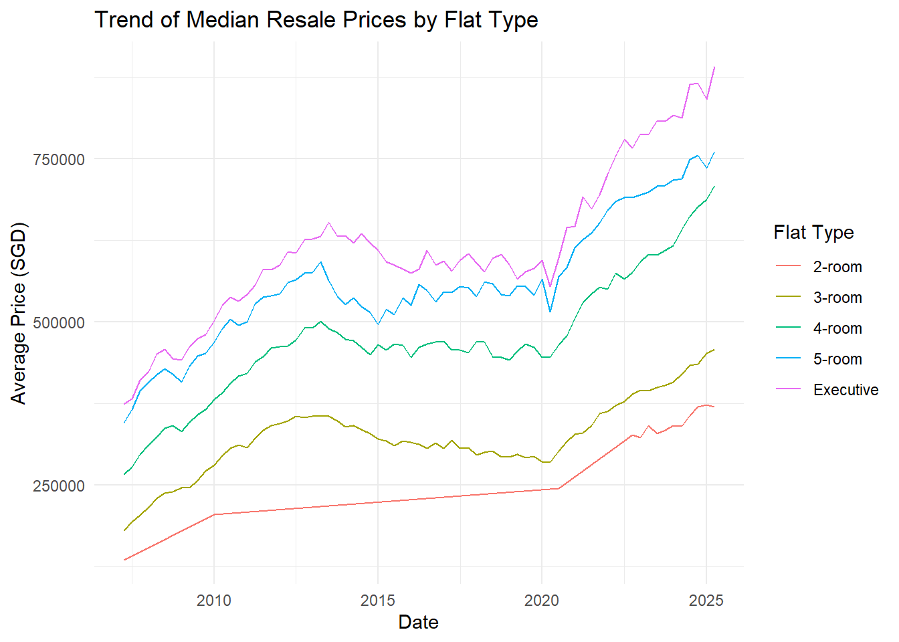
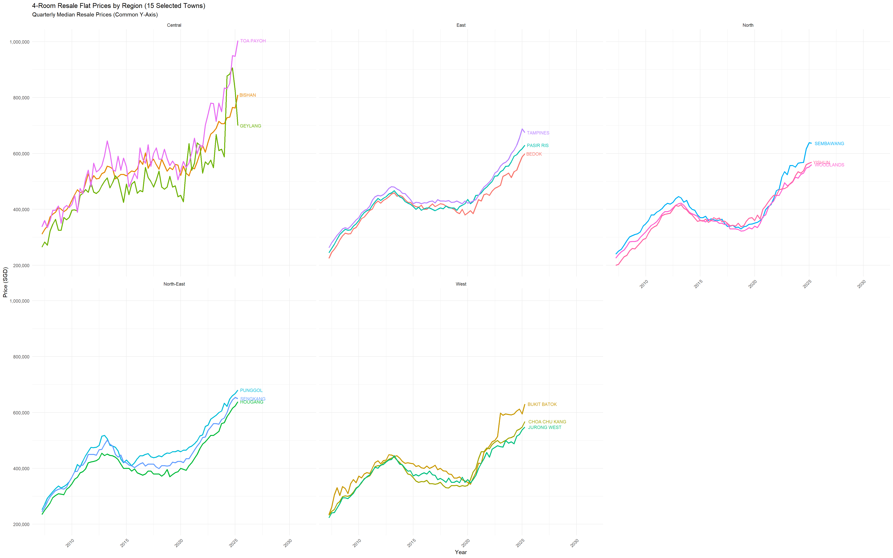
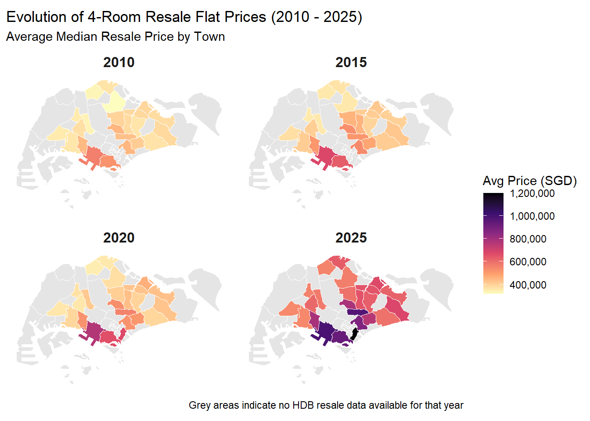
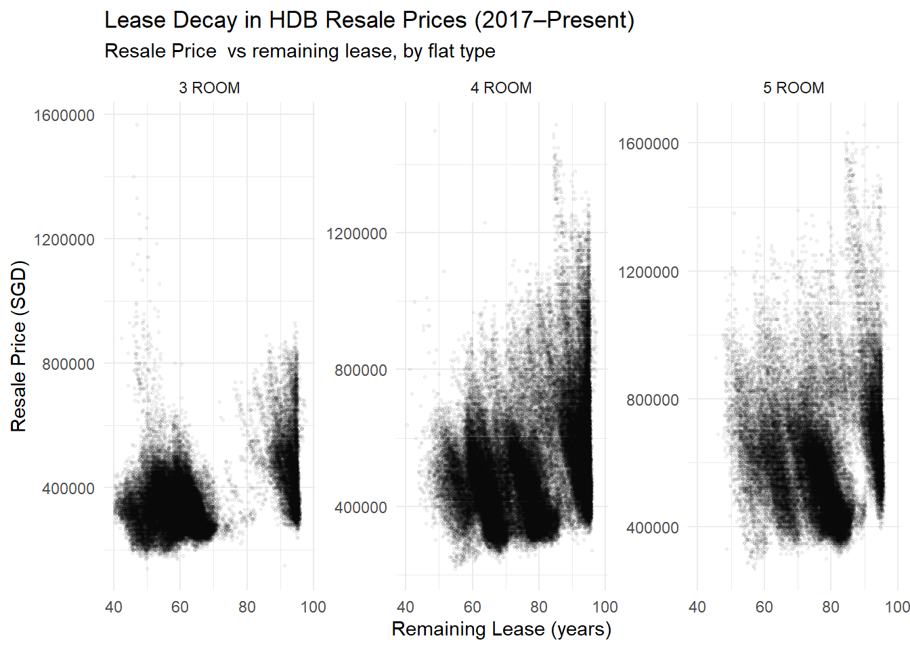
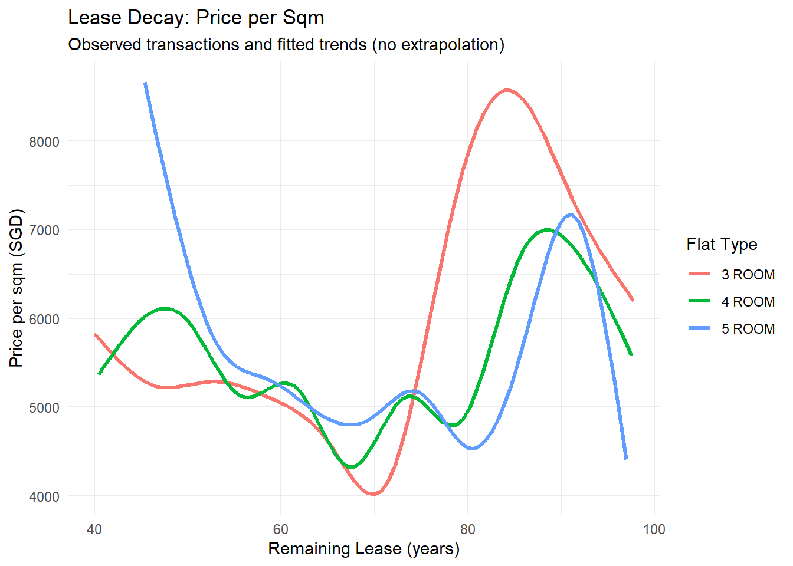
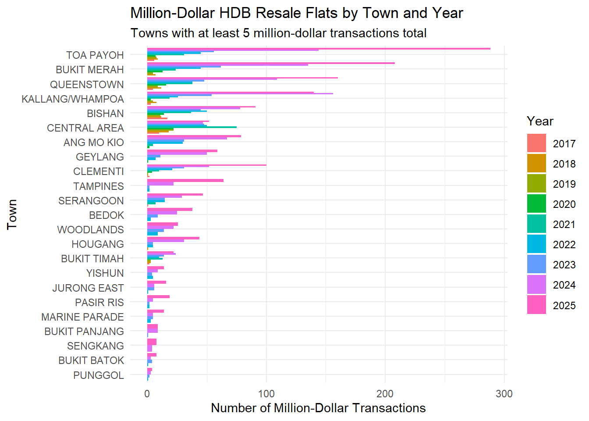
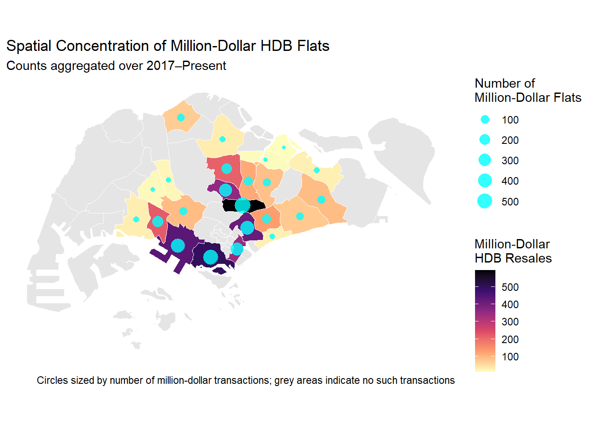
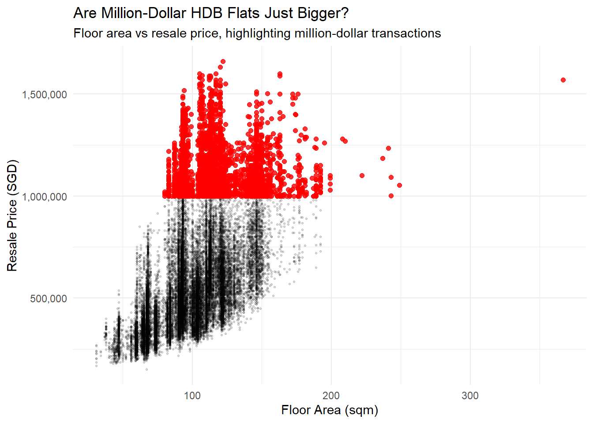
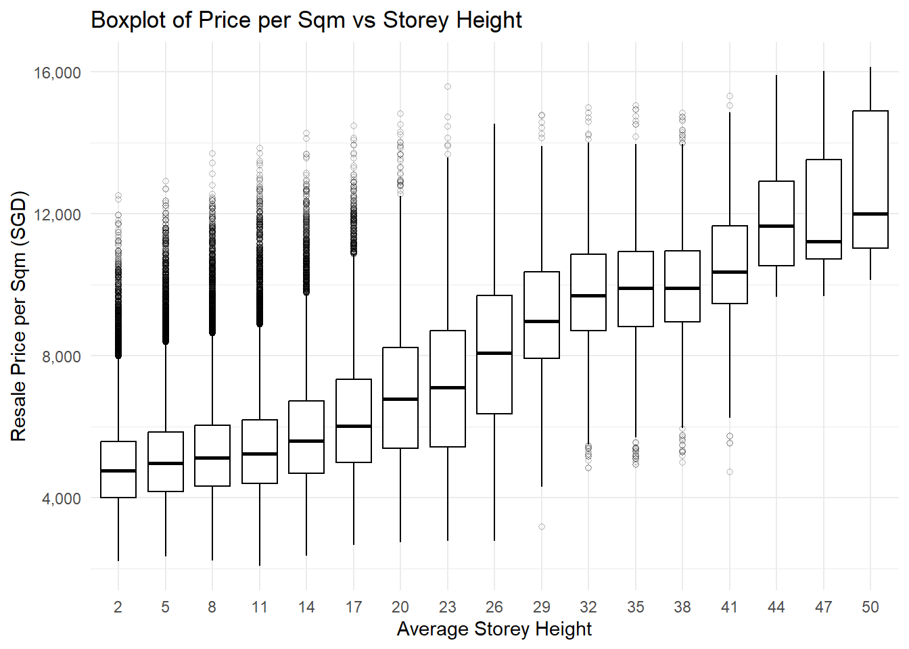

3.1.1 Plot 1A: Trend of Average Median Resale Prices by Flat Type
We first plot the trend of average median resale prices by flat type over time to observe general price movements across different flat categories.
Code
library(tidyverse)
Warning: package 'lubridate' was built under R version 4.5.2
── Attaching core tidyverse packages ──────────────────────── tidyverse 2.0.0 ──
✔ dplyr 1.1.4 ✔ readr 2.1.5
✔ forcats 1.0.0 ✔ stringr 1.5.2
✔ ggplot2 4.0.0 ✔ tibble 3.3.0
✔ lubridate 1.9.4 ✔ tidyr 1.3.1
✔ purrr 1.1.0
── Conflicts ────────────────────────────────────────── tidyverse_conflicts() ──
✖ dplyr::filter() masks stats::filter()
✖ dplyr::lag() masks stats::lag()
ℹ Use the conflicted package (<http://conflicted.r-lib.org/>) to force all conflicts to become errors
Code
library(sf)
Warning: package 'sf' was built under R version 4.5.2
Linking to GEOS 3.13.1, GDAL 3.11.4, PROJ 9.7.0; sf_use_s2() is TRUE
Code
library(lubridate)library(naniar)
Warning: package 'naniar' was built under R version 4.5.2
Code
# Load the pre-processed datadf_median_final <-read_rds("processed_data/df_median_final.rds")sg_map <-read_rds("processed_data/sg_map.rds")df_clean_transactions <-read_rds("processed_data/df_clean_transactions.rds")# Plot 1A: Trend of Average Median Resale Prices by Flat Type # Compute average price per flat type over timeavg_price_trend <- df_median_final |>group_by(date, flat_type) |>summarise(avg_price =mean(price, na.rm =TRUE)) |>ungroup()
`summarise()` has grouped output by 'date'. You can override using the
`.groups` argument.
Code
# Plot the trendggplot(avg_price_trend, aes(x = date, y = avg_price, color = flat_type)) +geom_line() +labs(title ="Trend of Median Resale Prices by Flat Type",x ="Date",y ="Average Price (SGD)",color ="Flat Type") +theme_minimal()

Analysis: As expected, larger flat types (e.g., 5-room, executive) generally command higher prices compared to smaller flat types (e.g., 2-room, 3-room). The plot for 2-room flats show a long straight line from 2007 to 2010 and then to 2020, indicating very few transactions during those periods, likely due to limited supply or demand for this flat type. The different flat types generally the same trend and rise and fall in tandem, suggesting that market-wide factors (e.g., economic conditions, government policies) influence prices across all flat categories similarly. Flat prices rose from 2007 to 2013, before decreasing/stagnating until around 2020, likely due to the aggressive property cooling measures put in place by the government. From 2020 onwards, there is a sharp increase in prices across all flat types, likely caused by limited housing supply from the delay to new housing projects during the COVID-19 pandemic, coupled with low interest rates that drove up demand.
3.1.2 Plot 1B: Trend of 4-Room Resale Flat Prices in Selected Towns by Region
Next, we focus on 4-room flats and examine their price trends across selected towns, grouped by region. This allows us to see regional variations while maintaining a common Y-axis for better comparison.
Code
# Plot 1B: Trend of 4-Room Resale Flat Prices in Selected Towns by Region# 1. Define Towns and Regions north_towns <-c("WOODLANDS", "YISHUN", "SEMBAWANG")northeast_towns <-c("SENGKANG", "HOUGANG", "PUNGGOL")east_towns <-c("TAMPINES", "BEDOK", "PASIR RIS")west_towns <-c("JURONG WEST", "CHOA CHU KANG", "BUKIT BATOK")central_towns <-c("BISHAN", "TOA PAYOH", "GEYLANG")selected_towns <-c(north_towns, northeast_towns, east_towns, west_towns, central_towns)# Map towns to regionsregion_map <-data.frame(town = selected_towns,region =c(rep("North", 3), rep("North-East", 3), rep("East", 3), rep("West", 3), rep("Central", 3)))# 2. Filter Datadf_4room_selected <- df_median_final |>filter(flat_type =="4-room") |>filter(town %in% selected_towns) |>left_join(region_map, by ="town")# 3. Create Label Data (New Step)# We calculate the last data point for each town to know where to put the labeltown_labels <- df_4room_selected |>group_by(town) |>filter(date ==max(date)) |>ungroup()# 4. Plottingggplot(df_4room_selected, aes(x = date, y = price, color = town)) +geom_line(size =1) +# Add labels directly to the end of the linesgeom_text(data = town_labels, aes(label = town), hjust =-0.1, size =3, show.legend =FALSE) +# Use facet_wrap without 'scales = "free_y"' to keep Y-axis commonfacet_wrap(~region) +# Expand the x-axis slightly to the right to make room for the text labelsscale_x_date(expand =expansion(mult =c(0.05, 0.4))) +labs(title ="4-Room Resale Flat Prices by Region (15 Selected Towns)",subtitle ="Quarterly Median Resale Prices (Common Y-Axis)",x ="Year",y ="Price (SGD)" ) +theme_minimal() +theme(axis.text.x =element_text(angle =45, hjust =1),legend.position ="none"# Remove the legend since lines are labeled directly ) +scale_y_continuous(labels = scales::comma)
Warning: Using `size` aesthetic for lines was deprecated in ggplot2 3.4.0.
ℹ Please use `linewidth` instead.

Analysis: 4-room flats were chosen for analysis because they were the most common and popular flat type in Singapore, and the specific towns were selected because they had the largest population in their respective regions, making them a good representation of regional trends. The plot reveals disparities in price levels between the central region and the other regions, with central towns consistently commanding higher prices. This reflects the premium associated with central locations due to better accessibility and amenities. The East and North-East regions show a slightly higher price level compared to the North and West regions, likely due to some of the flats here being newer and close to the airport.
3.1.3 Plot 1C: Choropleth Map of Average 4-Room Resale Flat Prices by Planning Area for Target Years
Finally, we create a faceted choropleth map to visualize the spatial distribution of average 4-room resale flat prices across planning areas for selected target years.
Code
# Plot 1C: Choropleth Map of Average 4-Room Resale Flat Prices by Planning Area for Target Years# Process & Filter Price Data# We need to map HDB town names to URA Planning Area namestarget_years <-c(2010, 2015, 2020, 2025)df_map_data <- df_median_final |>mutate(price =as.numeric(price),date =yq(quarter),year =year(date),town =toupper(town) ) |>filter(flat_type =="4-room") |>filter(year %in% target_years) |>filter(!is.na(price)) |># --- Crucial Step: Fix Name Mismatches ---mutate(town =case_when( town =="KALLANG/WHAMPOA"~"KALLANG", # Map to closest major planning area town =="CENTRAL AREA"~"DOWNTOWN CORE",TRUE~ town )) |># Calculate average median price for the whole yeargroup_by(year, town) |>summarise(avg_price =mean(price, na.rm =TRUE)) |>ungroup()
`summarise()` has grouped output by 'year'. You can override using the
`.groups` argument.
Code
# 4. Prepare Geospatial Data for Faceting# To facet correctly (keeping empty regions grey), we create a grid of All Regions x All Yearsfull_grid <-expand_grid(name =unique(sg_map$name),year = target_years)# Join the map shapes with the grid, then join the price dataplot_data <- full_grid |>left_join(sg_map, by ="name") |>st_as_sf() |># Convert back to sf object after joinleft_join(df_map_data, by =c("name"="town", "year"))# 5. Plot the Faceted Choropleth Mapggplot(plot_data) +geom_sf(aes(fill = avg_price), color ="white", size =0.2) +facet_wrap(~year, ncol =2) +# Use a consistent scale across all facetsscale_fill_viridis_c(option ="magma", direction =-1, # Darker colors = Higher pricesna.value ="grey90", labels = scales::comma,name ="Avg Price (SGD)" ) +labs(title ="Evolution of 4-Room Resale Flat Prices (2010 - 2025)",subtitle ="Average Median Resale Price by Town",caption ="Grey areas indicate no HDB resale data available for that year" ) +theme_minimal() +theme(axis.text =element_blank(),axis.ticks =element_blank(),panel.grid =element_blank(),legend.position ="right",strip.text =element_text(size =12, face ="bold") )

Analysis: The faceted choropleth map illustrates the spatial distribution of average 4-room resale flat prices across planning areas for the years 2010, 2015, 2020, and 2025. Over this period, there is a clear trend of rising prices across most regions, with central areas consistently exhibiting higher prices compared to peripheral regions. The map also highlights areas with limited or no data (grey regions), indicating low transaction volumes or the absence of 4-room flats in those areas, with some regions being taken up by natural features like reservoirs or parks.
3.2 Plots from Dataset 2 - HDB Resale Flat Transactions
3.2.1 Plot 2A: Lease Decay: Panel Plot
For the second dataset, we first analyze the lease-decay phenomenon in HDB resale prices using a panel plot of resale prices vs remaining lease, segmented by flat type.
Warning: package 'mgcv' was built under R version 4.5.2
Loading required package: nlme
Attaching package: 'nlme'
The following object is masked from 'package:dplyr':
collapse
This is mgcv 1.9-4. For overview type '?mgcv'.
Code
main_flats <-c("3 ROOM", "4 ROOM", "5 ROOM")panel_data <- df_clean_transactions |>filter(flat_type %in% main_flats)# 3. Panel plot: resale price vs remaining lease, by flat type ----ggplot(panel_data, aes(x = remaining_lease_years, y = resale_price)) +geom_point(alpha =0.05, size =0.6) +facet_wrap(~ flat_type, scales ="free_y") +labs(title ="Lease Decay in HDB Resale Prices (2017–Present)",subtitle ="Resale Price vs remaining lease, by flat type",x ="Remaining Lease (years)",y ="Resale Price (SGD)" ) +theme_minimal()

Analysis: Looking at the panel plots, it can be seen that there is a very big variance in the resale price for 3-room, 4-room nd 5-room flats, with a wide vertical spread of the points. As expected, the larger the flat, the higher the prices generally are. A general trend that can be observed is that there are blocks of flats being sold, flats with a remaining lease of 85-95 years and then flats with a remaining lease of about 40-80 years. This is likely due to a policy which stipulates new homeowners who purchase a brand new HDB abide by a minimum occupancy period (MOP) of 5-10 years, depending on the location of the flat, with flats in a better location having a longer MOP. This could explain the “increase” in prices as the remaining lease on a resale flat drops from 95 to 85 years, as most of the flats being sold with this amount of years remaining on the lease tend to be in prime locations such as the central region which command higher prices. Resale prices then generally fall as the remaining lease decreases below 80 years which reflect the loss in value of a flat as time goes on due to the leasehold nature of owning the property as well as the less modern build of the flat. However, there is a slight increase at around 50 years which may be the appeal of older houses typically having better locations from being built in a mature estate with more amenities.
3.2.2 Plot 2B: GAM Curve of Lease Decay
For the second plot, we fit a Generalized Additive Model (GAM) to capture the smooth lease-decay relationship in resale prices per sqm, to compare 3-room, 4-room, and 5-room flats using a common standard, regardless of their absolute flat areas.
Code
# GAM curve: smooth lease-decay shape ---------------------------ggplot(panel_data, aes(x = remaining_lease_years, y = price_per_sqm, color = flat_type)) +# 2. Add the smooth curve based only on existing data# method = "gam" calculates the curve for you automaticallygeom_smooth(method ="gam", formula = y ~s(x, bs ="cs"), se =FALSE, linewidth =1.1) +labs(title ="Lease Decay: Price per Sqm",subtitle ="Observed transactions and fitted trends (no extrapolation)",x ="Remaining Lease (years)",y ="Price per sqm (SGD)",color ="Flat Type" ) +theme_minimal()

Analysis: Looking at the smooth GAM curves for price per square meter, distinct trends emerge that differentiate the flat types beyond standard lease decay. The 5-room flats exhibit a pronounced “U-shaped” trajectory, commanding exceptionally high prices at low remaining lease levels (40–50 years), likely due to the scarcity of large floor plates in mature estates which outweighs the natural depreciation of the lease. A general “slump” is observed across all flat types between 65 and 80 years, representing a transition period where the flat loses its “newness” value but has not yet gained the vintage appeal of central locations. Interestingly, 3-room flats display the highest volatility, peaking sharply at the 85-year mark, which suggests that newly MOP-ed smaller units in prime locations command a significant premium per square meter despite their smaller overall quantum.
3.2.3 Plot 2C: Lease Decay Heatmap
Finally, we create a heatmap to visualize the median price per sqm across different flat types and binned remaining lease years.
Analysis: The heatmap provides a clear visual representation of how median price per square meter varies across different flat types and remaining lease bands. Darker tiles indicate higher prices, and we can observe that for all flat types, the highest median prices per sqm are generally concentrated in the 80-90 year remaining lease band due to the reasons listed above.
3.2.4 Plot 2D: Million-Dollar HDB Flats by Town and Year
Next, we analyze the distribution of million-dollar HDB resale flats by town and year using a dodged bar chart.
Code
million_flats <- df_clean_transactions |>filter(resale_price >=1000000)# 1. Prepare the data with a 'year' columnmillion_by_town_year <- million_flats |>mutate(year =year(date)) |># Extract year from dategroup_by(year, town) |># Group by the new year column, not datesummarise(n =n(), .groups ="drop") |># Filter logic (keep towns with >= 5 transactions total)group_by(town) |>mutate(total_n =sum(n)) |>ungroup() |>filter(total_n >=5)# 2. Plotggplot(million_by_town_year, aes(x =reorder(town, n), y = n, fill =factor(year))) +geom_col(position ="dodge") +# 'dodge' places bars side-by-sidecoord_flip() +labs(title ="Million-Dollar HDB Resale Flats by Town and Year",subtitle ="Towns with at least 5 million-dollar transactions total",x ="Town",y ="Number of Million-Dollar Transactions",fill ="Year" ) +theme_minimal()

Analysis: The plot shows that million-dollar HDB resale flats are highly concentrated in a small number of towns. Mature, centrally located estates such as Toa Payoh, Bukit Merah and Queenstown dominate the count each year, while most towns rarely register any million-dollar transactions. Over time, the number of million dollar resale flats generally increases, suggesting that “luxury HDB” units are becoming more common despite repeated cooling measures, a phenomenon that has been commonly reported on in Singaporean news, likely due to a wealthier middle and upper class who can afford these more expensive flats in a premium location.
3.2.5 Plot 2E: Million-Dollar HDB Flats on a Map
Next, we create a choropleth map to visualize the spatial distribution of million-dollar HDB resale flats by town.
Code
# 1. Count million-dollar flats per town (all years combined)million_by_town <- million_flats |>group_by(town) |>summarise(n =n(), .groups ="drop")# 2. Fix mismatched names to align with sg_mapmillion_by_town <- million_by_town |>mutate(town_for_map =case_when( town =="KALLANG/WHAMPOA"~"KALLANG", town =="CENTRAL AREA"~"DOWNTOWN CORE",TRUE~ town ) )# 3. Join with spatial datasg_map_join <- sg_map |>left_join(million_by_town, by =c("name"="town_for_map"))# 4. Compute centroids for point plottingcentroids <- sg_map_join |>st_centroid() |>filter(!is.na(n)) # keep only towns with at least 1 million-dollar flat
Warning: st_centroid assumes attributes are constant over geometries
Code
# 5. Plot: base map + points sized by countggplot() +geom_sf(data = sg_map, fill ="grey95", color ="white", linewidth =0.2) +geom_sf(data = sg_map_join, aes(fill = n), color ="white", linewidth =0.2) +scale_fill_viridis_c(option ="magma",direction =-1,na.value ="grey90",name ="Million-Dollar\nHDB Resales" ) +geom_sf(data = centroids, aes(size = n), color ="cyan", alpha =0.8) +scale_size_continuous(name ="Number of\nMillion-Dollar Flats") +labs(title ="Spatial Concentration of Million-Dollar HDB Flats",subtitle ="Counts aggregated over 2017–Present",caption ="Circles sized by number of million-dollar transactions; grey areas indicate no such transactions" ) +theme_minimal() +theme(axis.text =element_blank(),axis.ticks =element_blank(),panel.grid =element_blank(),legend.position ="right" )

Analysis: Figure 2E highlights the spatial clustering of million-dollar HDB flats. Only a handful of towns register a substantial number of million-dollar transactions, and these are predominantly in central or city-fringe regions. Peripheral towns in the North, West, and far East see few or no such sales, reinforcing the idea that location — rather than flat size alone — is a key driver of “luxury” HDB pricing.
3.2.6 Plot 2F: Scatterplot of Floor Area vs Resale Price, Highlighting Million-Dollar Flats
Subsequently, we create a scatterplot to examine the relationship between floor area and resale price, highlighting million-dollar flats in red.
Code
# For performance, you can optionally downsample non-million pointsset.seed(123)non_million_sample <- df_clean_transactions |>filter(resale_price <1000000) |>sample_frac(0.15) # 15% sample to keep the plot light; adjust as neededggplot() +geom_point(data = non_million_sample,aes(x = floor_area_sqm, y = resale_price),alpha =0.15,size =0.6 ) +geom_point(data = million_flats,aes(x = floor_area_sqm, y = resale_price),color ="red",alpha =0.8,size =1.6 ) +scale_y_continuous(labels = scales::comma) +labs(title ="Are Million-Dollar HDB Flats Just Bigger?",subtitle ="Floor area vs resale price, highlighting million-dollar transactions",x ="Floor Area (sqm)",y ="Resale Price (SGD)" ) +theme_minimal()

Analysis: Figure 2F shows the relationship between floor area and resale price. Million-dollar flats (in red) tend to cluster in the upper-right region of the scatterplot, indicating that they are generally larger and more expensive than typical units. However, there is also overlap with non-million-dollar flats of similar size, suggesting that location and flat attributes (storey, orientation, proximity to MRT/amenities) likely push certain units over the million-dollar threshold, rather than size alone.
3.2.7 Plot 2G: Boxplot of Price per Sqm vs Storey Height
Next, we create a Boxplot to analyze the relationship between price per square meter and storey height of HDB flats.
Code
ggplot(df_clean_transactions, aes(x =factor(storey_avg), y = price_per_sqm)) +# 1. The Box Plot geom_boxplot(outlier.shape =1, # Hollow circles for outliersoutlier.alpha =0.3, # Transparency for outliersfill ="white", # White box backgroundcolor ="black"# Black lines ) +scale_y_continuous(labels = scales::comma) +labs(title ="Boxplot of Price per Sqm vs Storey Height",x ="Average Storey Height",y ="Resale Price per Sqm (SGD)" ) +theme_minimal()

Analysis: The boxplot reveals that flats located on higher storeys generally command a higher price per square meter compared to those on lower storeys. This trend is likely due to the enhanced views, reduced noise levels, and perceived prestige associated with higher floors. However, there are also outliers in the lower storey categories, indicating that some lower-floor flats can still achieve high prices per sqm, possibly due to other factors such as location within the estate or flat condition. In terms of outliers, the interquartile spread for the lower storeys (1-10) is smaller but with many outliers in the higher price per sqm range, indicating that while most lower storey flats are cheaper, there are exceptions likely due to location or flat condition. Higher storeys (20 and above) show a generally wider interquartile range but not as many extreme outliers, suggesting a more consistent premium for higher floors.